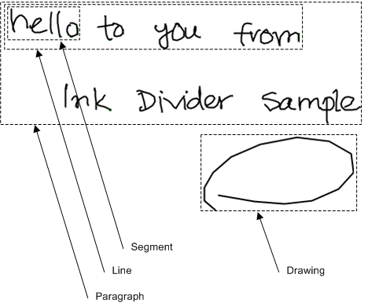

The Divider object provides layout analysis features that classify and group strokes into different structural elements.
The Divider object analyzes strokes as you add or remove them. You can retrieve the current classification and grouping of the analyzed strokes in a DivisionResult object by calling the Divide method of the Divider object.
The strokes that the Divider object analyzes are kept in the Strokes property of the Divider object. Because a Strokes collection is a reference to ink data and is not the actual data itself, changes in the parent Ink object of the Strokes collection can invalidate the Strokes collection. For more information about ink data, see Ink Data.
The Divider object uses a recognizer context to improve its analysis of recognition segments and to generate recognition text for handwriting elements. If a recognizer context is not assigned to the RecognizerContext property of the Divider object or recognizers are not installed, then the layout analysis feature performs the recognition segment division, and no text is associated with the DivisionResult object. For more information about ink recognition, see Ink Recognition.
Each DivisionResult object records the layout analysis of the strokes contained by the Divider object at the time the Divide method is called. The DivisionResult object also stores a copy of the strokes that were used in the analysis.
The DivisionResult object groups the analysis results by structural element type. The ResultByType method of the DivisionResult object returns in a DivisionUnits collection the collection of all structural elements of a given type. The InkDivisionType enumeration defines the element types that the layout analysis recognizes.
The following table describes the element types in the InkDivisionType enumeration.
| Name | Description |
|---|---|
| Segment | A recognition segment. |
| Line | A line of handwriting that contains one or more recognition segments. |
| Paragraph | A block of strokes that contains one or more lines of handwriting. |
| Drawing | Ink that is not text. |
The following image shows an example of the different element types the DivisionResult object recognizes.

Each DivisionUnits collection is a copy of the layout analysis result for a single type of structural element. The DivisionUnit object represents an individual element in the DivisionUnits collection. Each structural element has a reference to the strokes that make up the element. If recognizers are installed, handwriting elements have recognition text available. Line and recognition segment elements also include a rotation matrix that can rotate an element's strokes from vertical to horizontal.
The Ink Divider Sample topic demonstrates how to use a Divider object with Ink objects to perform ink layout analysis.
For more information about using ink analysis, see The Divider Object.